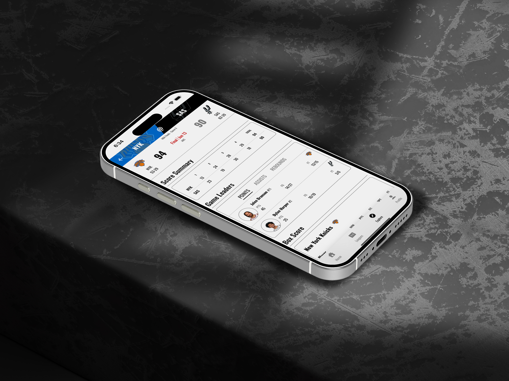

Sports App Design
The Tempo
The Tempo is a mobile sports app concept built around the way fans check games and connect with other fans quickly: team-first navigation, scannable schedules, live-score moments, clear matchup context, live game chats, team and league forums, and fan messaging.
Overview
The concept is designed for sports fans who want fast access to teams, matchups, game times, score updates, and community spaces without digging through a crowded interface.
Design focus
- Mobile dashboard hierarchy for quick scanning.
- Team-following flows that keep favorites easy to reach.
- Live game chats for real-time fan reactions during matchups.
- Team and league forums that give fans dedicated spaces to talk.
- Messaging features that support direct fan-to-fan engagement.
- Visual pacing built for live games and upcoming schedules.
Outcome
The result is a polished direction for a sports platform that makes scores, teams, upcoming games, and fan conversations easier to access without adding extra taps.